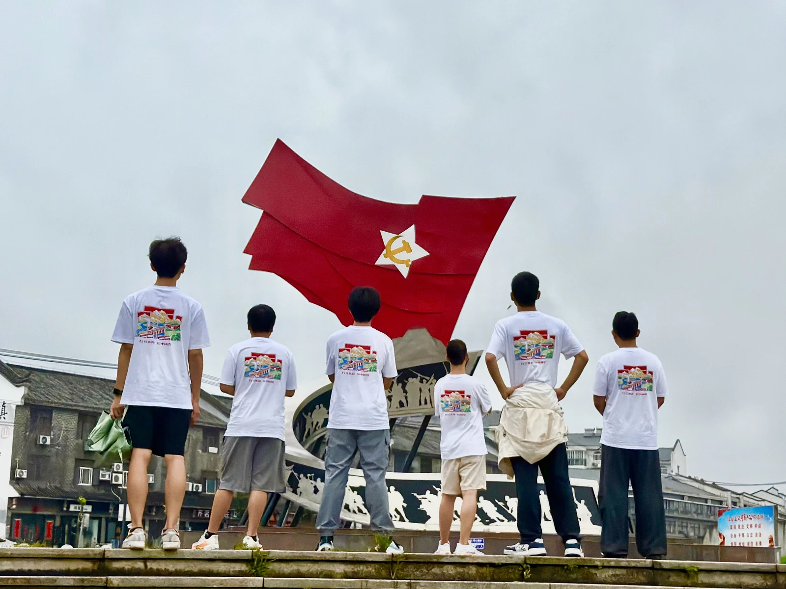
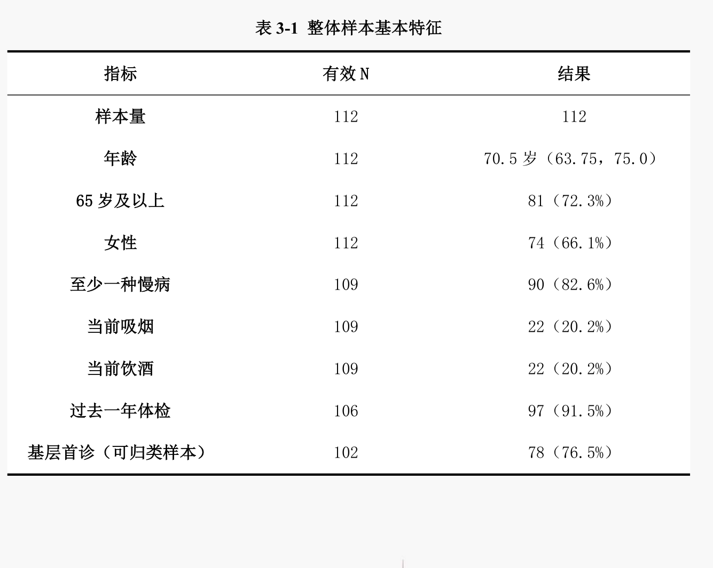
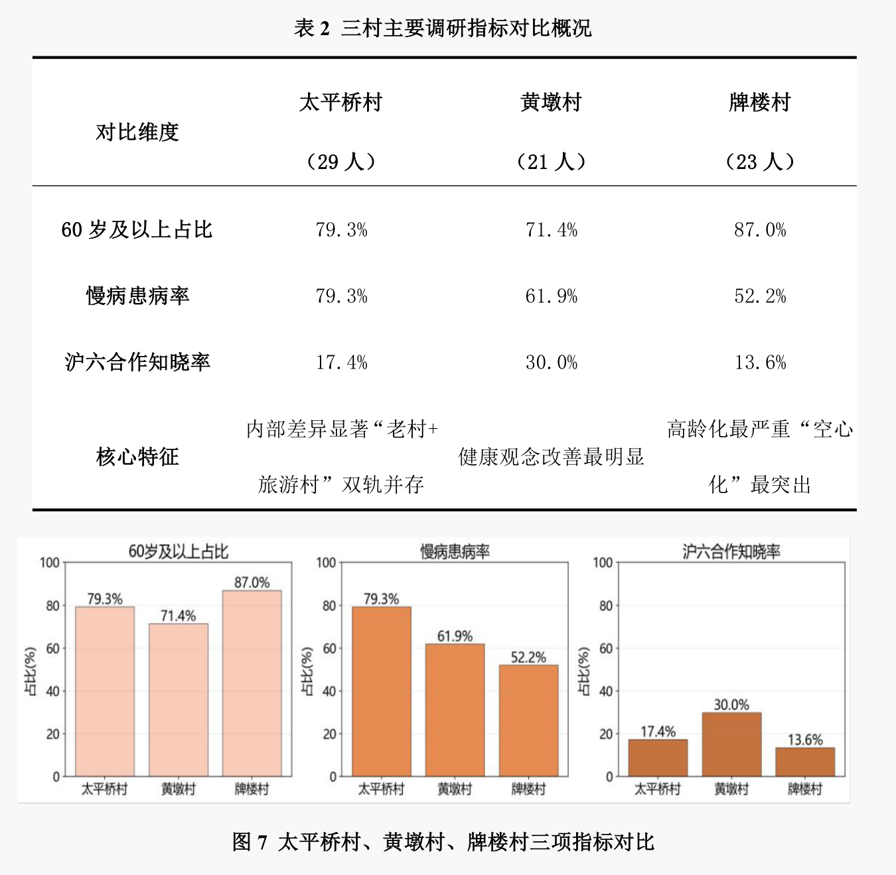
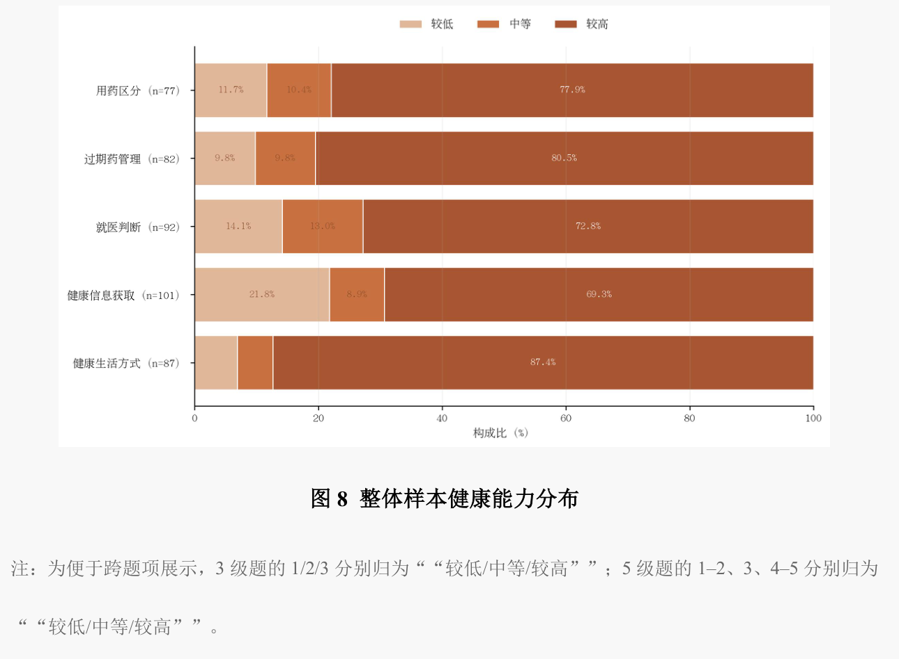
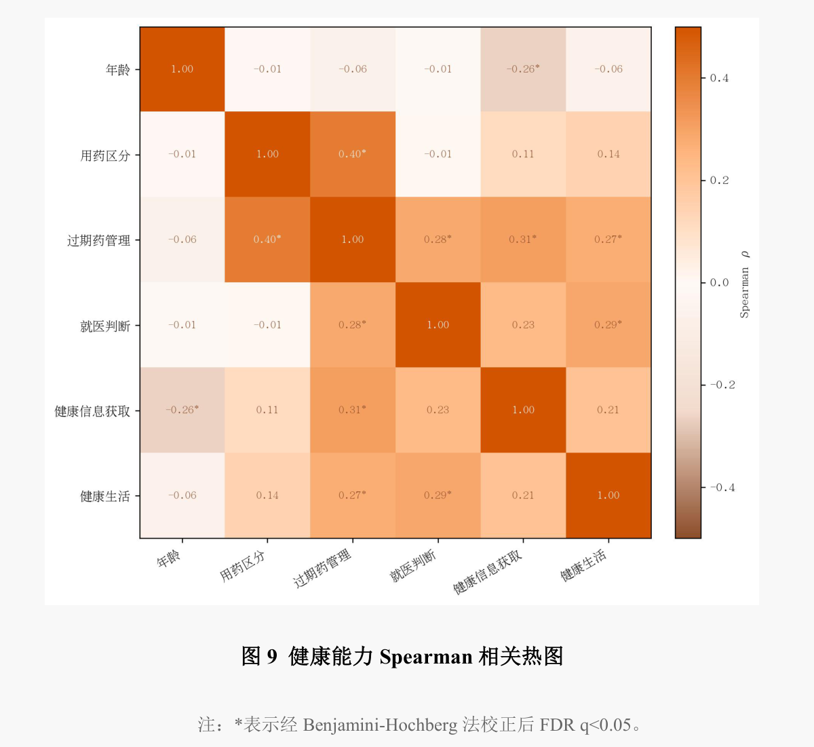

输出端
上海：经验如何传递
访谈援派专家与管理骨干，了解临床理念、适宜技术与人才培养如何传递。
本期社会实践 · 沪皖同行
教育科技人才一体化赋能沪六医疗对口合作
从上海医疗机构的输出经验，到六安基层的承接实践，再到奉贤的市域对照，我们追问：优质医疗资源如何转化为留下来的服务能力？

上海：经验如何传递
访谈援派专家与管理骨干，了解临床理念、适宜技术与人才培养如何传递。
六安：能力如何生根
走访行政部门、市县乡医疗机构与村庄，观察基层怎样接得住、用得好。
奉贤：资源如何下沉
以沪郊基层调研对照跨省帮扶，辨认资源下沉的共性与差异。
怎样认识这片田野
奉贤39份、六安73份，从居民日常了解健康素养与就医行为。
返校后面向大一新生，了解基层治理认知与生涯规划。
听取输出端、承接端与基层医务工作者的经验，形成主题分析。
2026 · 实践足迹
07.04 / 上海 · 仁济医院
参加门诊数智化与医学人文专题会议，了解技术、人才与服务流程怎样回应基层需求。





07.24 / 上海 · 奉贤
开展奉贤基层调研，以沪郊实践对照跨省帮扶，继续思考资源下沉、人才保障与服务可及性。

上海奉贤 39 人、六安 73 人，共 112 名受访者。

太平桥村 29 人、黄墩村 21 人、牌楼村 23 人，比较年龄结构、慢病患病率与家庭医生知晓率。

问卷记录中的健康能力分布。

从不同健康能力的关联，继续理解居民的日常生活。
把所见，变成下一步
从医院和村庄中提出问题，将所见所得带回科普课堂、成果分享与持续行动。报告用调研、服务、建言与传播记录了这条路径。
问卷与访谈，听见基层的具体需求。
比较不同现场，梳理问题与经验。
把健康知识带进课堂与社区。
形成建言与传播材料，继续讨论长期合作。
留下回声
谢谢你与我们一同思考。